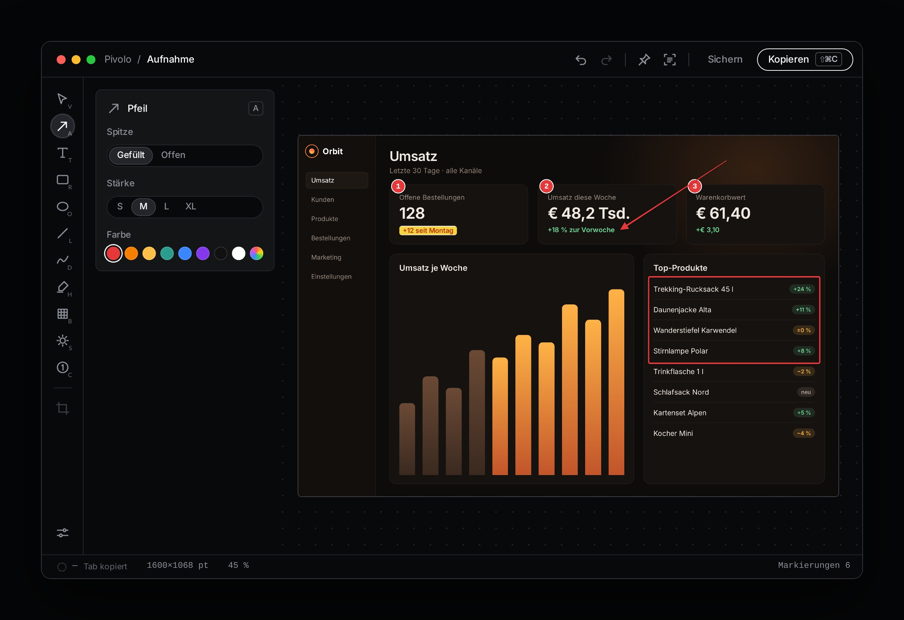
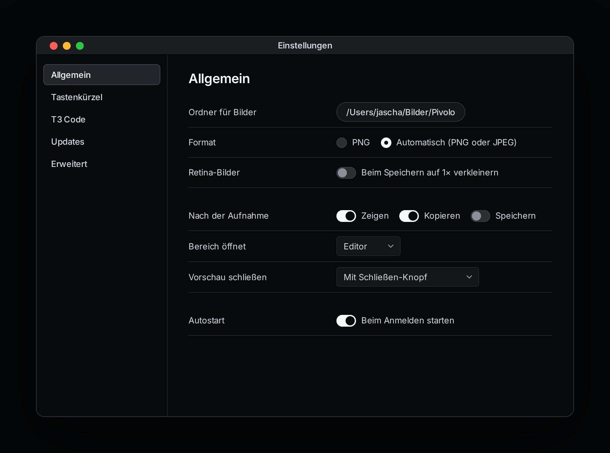
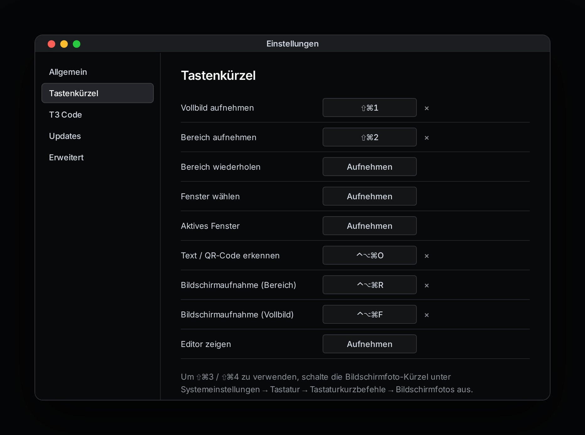
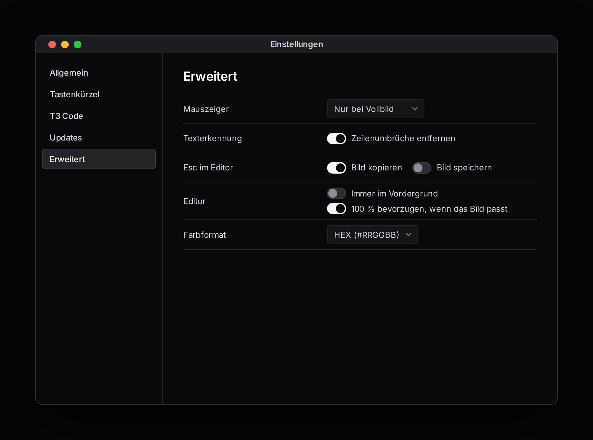

Beim Öffnen der DMG und beim ersten App-Start kann macOS melden,
dass Pivolo nicht geöffnet wurde. Klick auf
Fertig, öffne
Systemeinstellungen → Datenschutz & Sicherheit und
wähle unten Dennoch öffnen.
Pivolo ist nicht bei Apple notarisiert. Die Freigabe ist daher auf
macOS erforderlich.
Ohne Freigabe würde macOS nur den Schreibtischhintergrund liefern.
Pivolo bricht die Aufnahme stattdessen ab und zeigt den Hinweis
erneut. Unter Windows ist keine solche Freigabe nötig.
Aufnehmen
Du kannst Aufnahmen über das Menüleistensymbol (macOS) beziehungsweise
das Taskleistensymbol (Windows) oder per Tastenkürzel starten.
Vollbild⇧⌘1Nimmt den Bildschirm unter dem Mauszeiger auf.
Bereich⇧⌘2Bildschirm wird eingefroren. Ziehe einen Rahmen; Lupe und Maße
helfen beim genauen Ansetzen. Esc bricht ab.
Bereich wiederholen–Nimmt denselben Bereich erneut auf, etwa für
Vorher/Nachher.
Fenster wählen–Fenster unter dem Mauszeiger werden hervorgehoben. Anklicken
nimmt das Fenster samt Schatten und transparentem Hintergrund
auf.
Aktives Fenster–Nimmt das vorderste Fenster der aktiven App auf.
Text oder QR-Code erkennen⌃⌥⌘OBereich wählen; erkannter Text oder Code landet in der
Zwischenablage.
Bereich in T3 Code einfügen⌃⌥⌘TNimmt einen Bereich auf und fügt ihn als Anhang in den offenen
T3-Code-Chat ein.
Bild aus Zwischenablage⇧⌘VÖffnet ein kopiertes Bild im Editor.
Bild öffnen⌘OÖffnet PNG, JPEG, GIF, HEIC, TIFF oder WebP. Bilder lassen sich
auch in den Editor ziehen.
Windows: Verwende Strg statt ⌘, zum Beispiel
Strg+Umschalt+2 für einen Bereich. Die vollständigen Kürzel sind
anpassbar.
Nach der Aufnahme kannst du den Editor öffnen, sofort kopieren oder
speichern. Bereichsaufnahmen können stattdessen als kleine Vorschau
unten rechts erscheinen; von dort lässt sich das Bild kopieren,
speichern oder bearbeiten.
Bearbeiten im Editor

Editor mit Pfeil, Rahmen, nummerierten Markierungen und Textmarker
AuswahlVMarkierungen anklicken und verschieben. Auf leerer Fläche ziehen
wählt einen Bereich.
PfeilAMit ⇧ in 45°-Schritten ausrichten.
TextTKlicken und tippen; Esc oder ⌘↩ beendet die Eingabe.
Rechteck / OvalR / ORahmen oder gefüllt; mit ⇧ quadratisch beziehungsweise
kreisrund.
Linie / FreihandL / DDurchgezogene oder gestrichelte Linie und geglättetes
Freihandzeichnen.
TextmarkerHHebt Inhalt hervor und lässt Text lesbar.
Unkenntlich machenBVerpixelt oder weichzeichnet sensible Stellen.
SpotlightSDunkelt alles außerhalb des ausgewählten Bereichs ab.
ZählerCSetzt automatisch nummerierte Punkte 1, 2, 3 …
In der Optionskarte neben der Werkzeugschiene stellst du Farbe, Stärke
(S/M/L/XL) und Werkzeugstil ein. Bei ausgewählter Markierung ändern
die Einstellungen diese Markierung.
Zuschneiden: Mit Auswahl einen Bereich ziehen und
Enter drücken. Über
Bearbeiten → Zuschnitt zurücksetzen kommt das ganze Bild
zurück.
Zoom: ⌘+ / ⌘−; ⌘0 für 100 %, ⌘1 zum Einpassen.
Trackpad-Pinch und ⌘-Scrollrad funktionieren ebenfalls.
Farbe aufnehmen: Die Farbe unter dem Mauszeiger
steht unten links in der Statuszeile. Tab kopiert sie; ein Klick
wechselt HEX, RGB, CSS rgba() und OKLCH.
Windows: Strg ersetzt ⌘. Fenster werden ohne Schatten
aufgenommen.
Kopieren, sichern und anpinnen
Kopieren: ⇧⌘C oder Esc kopiert das bearbeitete Bild
und schließt den Editor. In der Ziel-App mit ⌘V einfügen.
Sichern: ⌘S speichert im eingestellten Ordner
(Vorgabe: Schreibtisch). Oberflächen werden als PNG, Fotos bei
automatischer Auswahl als JPEG gespeichert.
Sichern unter: ⇧⌘S wählt Speicherort und
PNG/JPEG-Format.
Anpinnen: ⌘P stellt das Bild rahmenlos über andere
Fenster. Rechtsklick bietet 50 %, 100 %, 200 %, Transparenz,
Kopieren und Schließen. Doppelklick oder Esc schließt das
Pin-Fenster.
Die Dateinamen enthalten Datum und Uhrzeit. Retina-Bilder können beim
Speichern auf die angezeigte Größe verkleinert werden.
Text und QR-Codes erkennen
Direkt vom Bildschirm: ⌃⌥⌘O drücken und den Bereich
wählen.
Im Editor: Einen Bereich mit Auswahl markieren
(oder nichts auswählen für das ganze Bild) und ⇧⌘T drücken.
Erkannter Text wird in Lesereihenfolge kopiert; Bar- und QR-Codes
ebenfalls. Auf macOS läuft die Erkennung lokal über Apple Vision.
Unter Windows nutzt Pivolo die installierten Windows-Sprachen. Unter
Einstellungen → Erweitert → Texterkennung kannst du
Zeilenumbrüche entfernen.
Bereich in T3 Code einfügen
Mit ⌃⌥⌘T (Windows: Strg+Alt+T) nimmst du einen Bereich auf und fügst
das Bild als Anhang in den offenen T3-Code-Chat ein. Pivolo sendet
nichts ab.
Kürzel drücken oder im Menü den Eintrag
Bereich in T3 Code einfügen wählen.
Bereich aufziehen. Esc bricht ab.
Pivolo holt das gefundene T3-Code-Fenster nach vorn und fügt das
Bild ein.
Das Fenster wird am App- oder Fensternamen erkannt (Vorgabe „T3
Code“); der Name lässt sich in den Einstellungen ändern. Wenn mehrere
Fenster passen, gilt das vorderste. Im Chat muss die Eingabe aktiv
sein.
macOS: Beim ersten Mal die Freigabe unter
Systemeinstellungen → Datenschutz & Sicherheit →
Bedienungshilfen
erlauben. Ohne Freigabe bleibt das Bild in der Zwischenablage und du
kannst es selbst mit ⌘V einfügen. Windows: Läuft T3
Code mit Administratorrechten, darf Pivolo dort nicht einfügen. Ist
das Chatfenster nicht verfügbar, bleibt das Bild ebenfalls in der
Zwischenablage.
Bildschirmaufnahme als Video
Videoaufnahme ist auf macOS 15 oder neuer sowie Windows 10 (ab Version
2004) und Windows 11 verfügbar.
⌃⌥⌘R drücken oder im Menü
Bildschirmaufnahme (Bereich) … wählen.
Bereich aufziehen. Der Rahmen und die Leiste mit
Start zeigen den Ausschnitt; noch läuft keine
Aufnahme.
Start anklicken oder erneut ⌃⌥⌘R drücken. Der Rahmen wird rot; die
Leiste zeigt die Laufzeit.
Mit Stopp, erneutem Kürzel oder Menüeintrag
beenden. Esc verwirft den Bereich vor dem Start.
Das Video wird als MP4 (H.264, Retina-Auflösung, 30 Bilder pro
Sekunde, mit Mauszeiger, ohne Ton) im eingestellten Ordner
gespeichert. Rahmen und Steuerleiste sind nicht im Video. Windows
nutzt Strg+Alt+R.
Einstellungen
Über das Menüleistensymbol beziehungsweise Taskleistensymbol →
Einstellungen; auf macOS auch mit ⌘,.

Allgemein

Tastenkürzel

Erweitert
Allgemein: Speicherordner und Format,
Retina-Skalierung, Verhalten nach der Aufnahme, Bereich-Editor oder
Vorschau und Autostart.
Tastenkürzel: In ein Feld klicken und gewünschte
Kombination drücken. × entfernt sie; Esc bricht ab. Belegte
Kombinationen werden gemeldet. Für ⇧⌘3/⇧⌘4 zuerst die
Bildschirmfoto-Kürzel von macOS deaktivieren.
Updates: Pivolo sucht beim Start und danach täglich
nach Updates. Manuelle Suche ist jederzeit möglich; gefundene
Updates werden geprüft, installiert und Pivolo startet neu. Die
automatische Suche lässt sich abschalten.
Erweitert: Mauszeiger, Texterkennung, Esc-Verhalten
(kopieren/speichern), Editor-Vordergrund, Zoom und Farbformat.
Die Update-Suche ruft eine kleine Versionsdatei von GitHub ab.
Aufnahmen, Einstellungen und Texterkennung werden nicht übertragen.
GitHub sieht beim Abruf deine IP-Adresse.
Wichtige Kürzel
Überall
⇧⌘1 Vollbild · ⇧⌘2 Bereich ·
⌃⌥⌘O Text erkennen · ⌃⌥⌘T Bereich in T3 Code
· ⌃⌥⌘R Videoaufnahme.
Im Editor
V A T R O L D H B S C Werkzeuge ·
⇧⌘C kopieren · ⌘S sichern ·
⌘P anpinnen · ⌘Z widerrufen ·
Enter zuschneiden · Tab Farbe kopieren.
Unter Windows ersetzt Strg das ⌘-Symbol. Alle globalen Kürzel sind
frei belegbar.
Fragen und Probleme
Die Bildschirmaufnahme-Freigabe wird wiederholt verlangt.
Entferne Pivolo in
Datenschutz & Sicherheit → Bildschirm- &
Systemaudioaufnahme
mit −, erlaube es erneut und starte die App neu.
Ein Kürzel reagiert nicht.
Eine andere App verwendet möglicherweise dieselbe Kombination. Wähle
in Pivolo unter Tastenkürzel eine andere Kombination.
Das Menüleistensymbol ist nicht zu sehen.
macOS blendet Symbole bei wenig Platz aus, etwa hinter der
Kameraaussparung. Die Kürzel funktionieren weiter; Einstellungen
öffnest du mit ⌘, sobald ein Pivolo-Fenster aktiv ist.
Sendet Pivolo meine Bildschirmfotos ins Internet?
Nein. Aufnahmen, Texterkennung und Einstellungen bleiben lokal. Die
einzige Verbindung ist die abschaltbare Update-Suche nach einer
kleinen Versionsdatei auf GitHub.
Windows zeigt eine Sicherheitswarnung.
Wähle im Dialog Weitere Informationen → Trotzdem ausführen.
Der Installer ist nicht mit einem gekauften Zertifikat signiert.